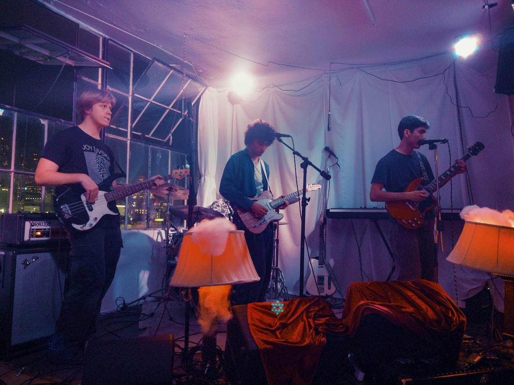
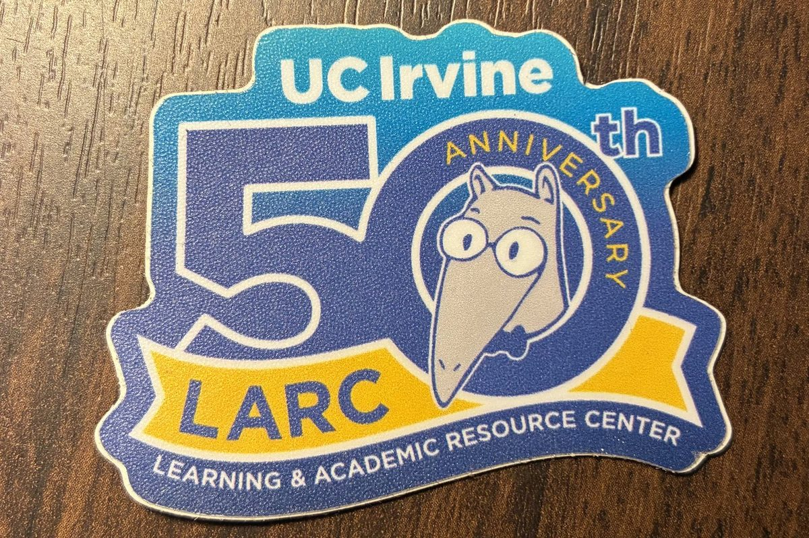
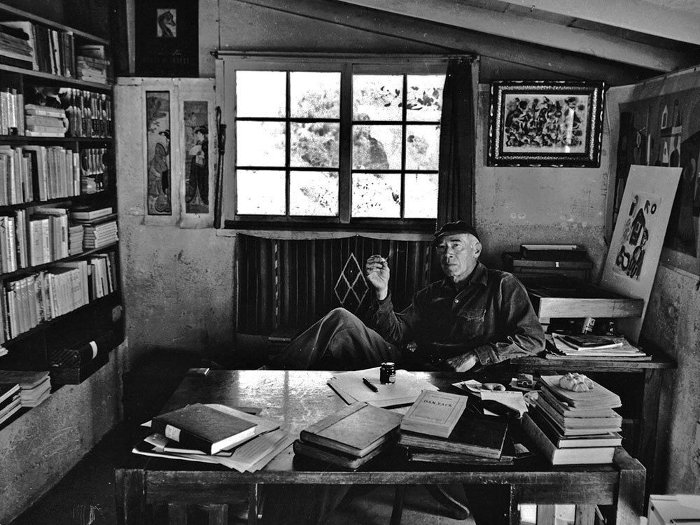

Music
My music and thoughts on music

Pedagogy
My thoughts and advice on teaching and learning

Henry Miller
Research work and other thoughts
Image
Elsewhere
[One line on whatever else I find exciting.]
I am interested in a lot of things outside my research. I’ve put together an exposition of some of them below, partly as an exercise for myself to think about what they mean to me and partly to share with others.

My music and thoughts on music

My thoughts and advice on teaching and learning

Research work and other thoughts
[One line on whatever else I find exciting.]